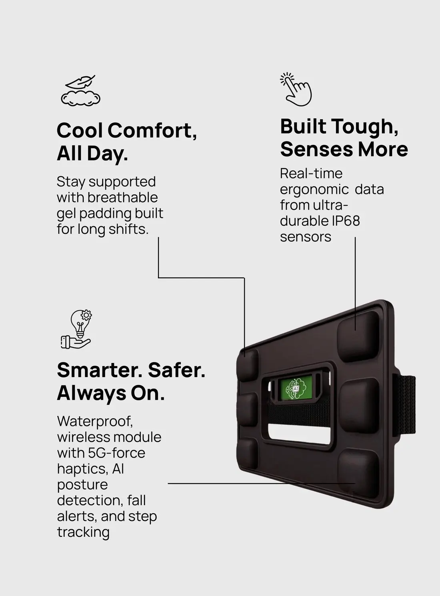

01 / WEAR
Fit Backy at your lower back
Centre the device on your lower back. Position the buckle at or above your belly button, then tighten the belt until snug and comfortable.
Backy gives workers a timely cue when movement becomes risky, and gives safety teams a clearer view of where strain builds up across the workday.

Backy is a lower-back wearable that senses posture and movement, gives workers a discreet haptic cue when a selected risk threshold is reached, and helps safety teams understand where strain builds across a shift.
Wear Backy through the shift. A discreet vibration lets you know when a posture reaches the configured risk threshold, so you can adjust in the moment.
Centre the device on your lower back. Position the buckle at or above your belly button, then tighten the belt until snug and comfortable.

Stand upright, breathe in and out deeply, and keep Backy centred and vertical. Slow vibration for three seconds followed by a short melody confirms calibration.

Backy continuously monitors posture. When a high-risk posture is detected, you’ll feel vibration feedback.

Adjust your posture promptly to stop the vibration. The illustration shows one example; follow your site’s task-specific lifting guidance.

Tell us about your team, its manual-handling tasks and the safety question you want to answer.